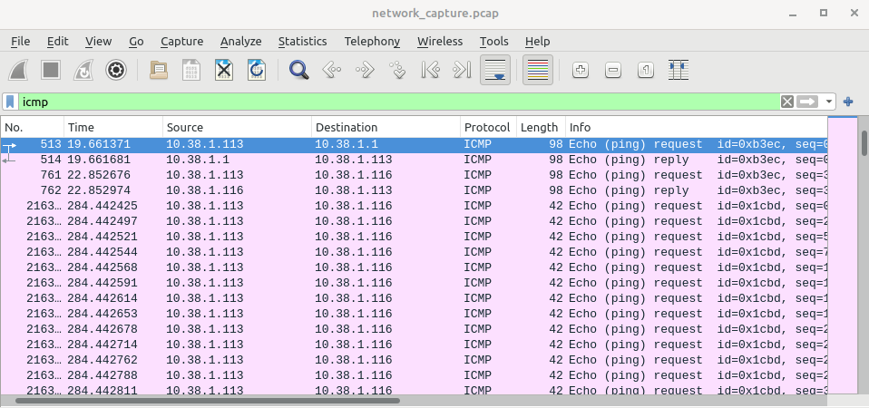
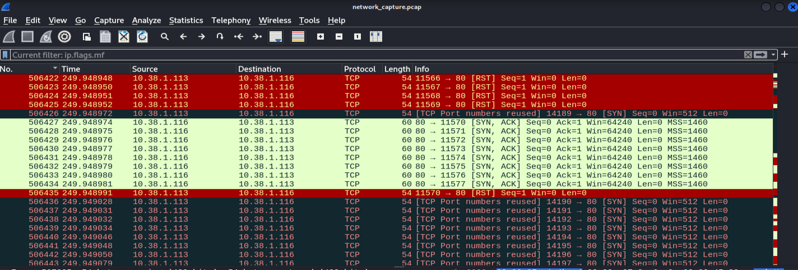
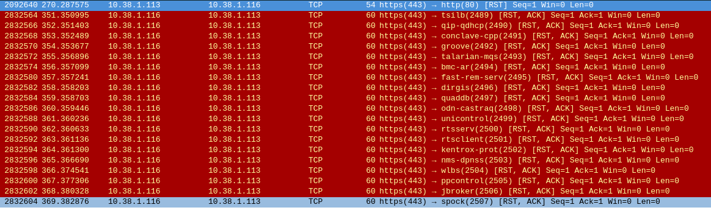

In the realm of network security, understanding how to monitor and analyze network traffic is a fundamental skill. This lab serves as a practical demonstration of tcpdump and Wireshark, two indispensable tools for network analysis.
The lab environment consists of two interconnected VMs:
Kali Linux VM: Used for generating traffic with hping and analyzing it with Wireshark.
Ubuntu Linux VM: Used as the simulated target with ports 22 and 80 open.
These first commands will generate a very large ARP storm.

Successful SSH connection from Kali VM to Ubuntu VM:

File transfer from Kali to Ubuntu:


hping flood on port 80:

hping ICMP flood:

hping fragmented packets:

hping data injection:

hping spoofed IP source:

Example of ARP scan traffic:

ARP Request and Reply details:


ICMP Echo Requests for discovering live hosts:
Example of an Nmap SYN Scan:

Port 22 and Port 80 details:


SSH Connection TCP Handshake:

Encrypted Traffic for SCP File Transfer:


Example of TCP SYN Flood attack targeting Port 80:

Deliberately fragmented packets:

Example of traffic with custom payload:
Example of spoofed traffic:

This lab demonstrates how tcpdump and Wireshark can monitor, diagnose, and secure network environments. From identifying intrusions to analyzing legitimate traffic patterns, these tools give cybersecurity professionals critical visibility into network activity.